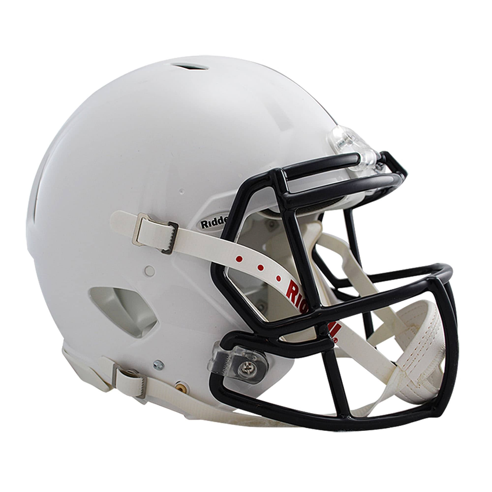

Garrett's Sporting Gear
Tennis

Tennis is a game of either two or four players. In either variant, the players use a racket (pictured above) to bounce a tennis ball to the other side of the court. If the ball bounces twice on one player's side, then the other player earns points. We sell all the tennis gear that you need on our digital storefront. Tennis rackets, tennis balls, even replacement strings for you racket.
Soccer

Socker is generally played with two teams of about ten people each. Each team has a goal on opposite sides of the field, and teams score points by kicking the ball into the other team's goal. Each team has one player, referred to as the goalie, whose job is to keep the ball out of their team's goal. We sell a wide variety of equipment for soccer, including high-traction shoes. We also sell protective gear suck as kneepads for the goalie.
Football
Like soccer, football is also played with teams of ten or eleven people. Unlike soccer, players hold the ball instead of kicking it. Furthermore, each entire end of the field is designated as a goal (referred to as an 'end zone') for one of the teams. Points are earned in a similar fashion as soccer, by carrying the ball to the opponent's end zone. Football is a very physical sport, so we have a wide variety of padded gear in stock, to keep players as safe as possible while playing.